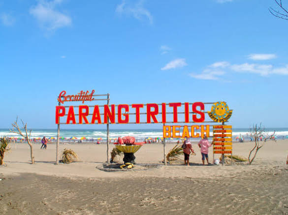

01 · Pesisir selatan
Pantai Parangtritis
Pantai di pesisir selatan Kabupaten Bantul ini menawarkan garis pantai yang luas, debur ombak Samudra Hindia, dan langit senja yang indah. Suasana pantainya cocok untuk berjalan santai sambil menikmati pemandangan laut.
- Waktu yang disarankan: sore hari
- Aktivitas: menikmati pemandangan dan berjalan di tepi pantai